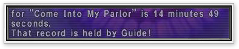

[Event Related]
The new region "Lumoria" has been added.
* This region is not included in the Conquest and will not be displayed in Region Info.
New quests centered in the Chains of Promathia areas have been added.
Numerous changes have been made to the Ballista system.
Details here >>
Multi-tickets for barges and manaclippers are now available for purchase.
The following changes have been made to the barge system :
-It is now possible to board barges from the same landing at which you disembarked.
-A new route for South Landing via Newtpool leaving from Central Landing has replaced
the Central Landing via Newtpool route leaving from South Landing.
-The number of barges operating per day has increased from four to five.
Mannequins are now on sale.
Mannequins can be purchased in Mhaura from the NPC Fyi Chalmwoh.
Also, mannequins of a different race can be purchased at a discount price by trading in an old mannequin.
Those wishing to purchase a mannequin must first complete the quest "It's Raining Mannequins."
It is now possible to choose the exit area after clearing certain battlefields. The battlefields and their corresponding exit areas are as follows :
* The exit area cannot be chosen after clearing a battlefield for the Chains of Promathia story. For Mine Shaft #2716 only, it is necessary to speak with a Moblin NPC in Newton Movalpolos after clearing the battlefield.
| Battlefield | Exit Areas | |
| Mine Shaft #2716 | >> | North Gustaberg, inside the entrance to Mine Shaft #2716 |
| Spire of Holla | La Theine Plateau, inside the entrance to the Spire of Holla | |
| Spire of Dem | Konschtat Highlands, inside the entrance to the Spire of Dem | |
| Spire of Mea | Tahrongi Canyon, inside the entrance to the Spire of Mea | |
| Spire of Vahzl | Beaucedine Glacier, inside the entrance to the Spire of Vahzl | |
| Monarch Linn | Misareaux Coast, inside the entrance to Monarch Linn |
Even after completing the quest "Return to the Depths," it is now possible to take the shortcut to Mine Shaft #2716 by trading an Ahriman tear to the NPC Tarnotik in Oldton Movalpolos.
Forest carp are now accepted for the quests "The Rivalry" and "The Competition."
The reward for a single moat carp in the quests "The Rivalry" and "The Competition" has been changed to match the amount received when selling the fish to other NPCs.
The rewards for the quest "Inside the Belly" have been adjusted.
[Battle Related]
New battlefield types known as Empty Notorious Monster (ENM) quests have been introduced.
Details here >>
- Best Time Record Holder -
When entering a battlefield, the record for the best time will now be accompanied by the record holder’s name.
|  |
adventurers, including (name of first member to enter the battlefield)!"
-When cleared solo, the message will read, "That record is held by (name of record holder)!
- Event Scene Skip -
It is now possible to skip the event scene for battlefields you have already cleared.
New notorious monsters have been added to the Chains of Promathia areas.
A section of the monsters in the Chains of Promathia areas has been adjusted.
The behavior of certain monsters has been corrected.
The behavior of the Morion Worm has been adjusted.
A certain amount of time after it has been engaged in battle, the Morion Worm will retreat under the ground, ending the fight.
The location where monsters reappear after using the ability Mijin Gakure has been adjusted.
The limit for adjusting existing abilities using Merit Points has been raised.
The abilities available for Merit Point usage have been expanded.
These abilities have been divided by job type, as listed below.
There are two conditions for using Merit Points on these abilities: the job to which the ability pertains must be set as the main job, and the main job level must be 75.
| Warrior | Monk |
| -Berserk Recast -Defender Recast -Warcry Recast -Aggressor Recast -Double Attack Rate |
-Focus Recast -Dodge Recast -Chakra Recast -Counter Rate -Kick Attack Rate |
| White Mage | Black Mage |
| -Divine Seal Recast -Cure Cast Time -Bar Spell Effect -Banish Effect -Regen Effect |
-Elemental Seal Recast -Fire Magic Potency -Ice Magic Potency -Wind Magic Potency -Earth Magic Potency -Lightning Magic Potency -Water Magic Potency |
| Red Mage | Thief |
| -Convert Recast -Fire Magic Accuracy -Ice Magic Accuracy -Wind Magic Accuracy -Earth Magic Accuracy -Lightning Magic Accuracy -Water Magic Accuracy |
-Flee Recast -Hide Recast -Sneak Attack Recast -Trick Attack Recast -Triple Attack Rate |
| Paladin | Dark Knight |
| -Shield Bash Recast -Holy Circle Recast -Sentinel Recast -Cover Effect Length -Rampart Recast |
-Souleater Recast -Arcane Circle Recast -Last Resort Recast -Last Resort Effect -Weapon Bash Recast |
| Beastmaster | Bard |
| -Killer Effects -Reward Recast -Call Beast Recast -Sic Recast -Tame Recast |
-Lullaby Recast -Finale Recast -Minne Effect -Minuet Effect -Madrigal Effect |
| Ranger | Samurai |
| -Scavenge Recast -Camouflage Recast -Sharpshot Recast -Unlimited Shot Recast -Rapid Shot Rate |
-Third Eye Recast -Warding Circle Recast -Store TP Effect -Meditate Recast -Zanshin Attack Rate |
| Ninja | Dragoon |
| -Subtle Blow Effect -Katon Effect -Hyoton Effect -Huton Effect -Doton Effect -Raiton Effect -Suiton Effect |
-Ancient Circle Recast -Jump Recast -High Jump Recast -Super Jump Recast -Spirit Link Recast |
| Summoner | |
| -Avatar Physical Accuracy -Avatar Physical Attack -Avatar Magical Accuracy -Avatar Magical Attack -Elemental MP Cost |
If the target of a ranged attack moves out of weapon range, the ranged attack will now automatically miss.
The shield system has been altered.
Shields will now reduce the amount of damage taken instead of negating all damage.
The frequency with which a shield is used, as well as the amount of damage reduced, will depend on the type of shield equipped.
To coincide with these changes, shield usage will now be determined after any evasion effects are considered.
The blindness effect caused by the white magic spell Flash and the black magic spell Blind will now be considered as different status effects. Accordingly, Flash will no longer cancel the effect of Blind.
The white magic spell Banish will now cause more damage against undead monsters.
The white magic spell Banish III has become available.
-Banish III WHM Lv.65
The damage for Banish III cast by monsters has been adjusted, and paladin-type monsters will no longer have access to this spell.
The white mage job trait Divine Veil has been added.
The job trait Divine Veil enhances the effect of the job ability Divine Seal. When cast after using Divine Seal, the effect area for spells that remove status ailments will increase from a single target to a small radius.
New methods of obtaining the white magic spell Raise III have been added.
The samurai job trait Zanshin has been added.
After gaining this job trait, samurais may attack again immediately after missing a target.
The effect of the samurai job ability Third Eye has been adjusted.
Magic, songs, and breath attacks will no longer cancel the effect of Third Eye. Also, the effect will extend to anticipating multiple-attack techniques that target a single opponent.
The Super Jump ability of the dragoon’s wyvern will now be called Super Climb.
[Item Related]
A new feature regarding the storage of artifact armor has been added.
Artifact armor for each job consists of five parts: Head, Body, Hands, Legs, and Feet.
If you trade all five parts to one of the NPCs listed below, you will receive a key item called a "claim slip" in exchange for your artifact armor. You can retrieve your armor at any time by talking to the NPC and paying 1000 gil.
-Taulenne (Northern San d’Oria)
-Sinon (Bastok Markets)
-Tesch Garanjy (Windurst Woods)
-Caruvinda (Lower Jeuno)
-Ratonne (Tavnazian Safehold)
Several shops have new goods for sale.
The available amount of curry powder, holy basil, and ground wasabi has been increased.
Logging is now possible in the Misareaux Coast.
Logging results in the Lufaise Meadows have been adjusted.
With some exceptions, fish obtainable through fishing will now be bought at half the previous price by NPCs.
Conversely, the number of guild points gained per fish for Fishermen’s Guild contracts will be multiplied by 1.5, and the new point limit will be recalculated based on this new value.
Changes and additions have been made to the items required to fulfill guild contracts.
A new key item called "Alchemic Ensorcellment" has become available for purchase with alchemy guild points.
The number of alchemy guild points required to purchase the key item Anima Synthesis has been reduced from 3000 to 2000.
Various new items have been added.
New synthesis/desynthesis recipes have been added.
It is now possible to trade cluster cores and snow lilies.
New graphics for fishing rods have been added.
It is now possible to add a maker’s signature to the food item brain stew.
The icon for the item urushi has changed.
[System Related]
Major improvements have been made to the fishing system. A new NPC has appeared near the Fishermen’s Guild to explain the changes.
Details here >>
Search comment categories have been divided.
The previous four categories have been divided into seven: EXP party, Mission, Quest, Battlefield, Item, Synthesis, and Others. Newly added subcategories such as Seek Party and Find Member allow for more specific comments and searches.
New text commands for setting search comments have been added.
There are two steps to setting a search comment using text commands. First, compose a comment of up to 3 lines using /seacom. Second, set a category and subcategory with /seacomup to register the comment.
1. Composing a Search Comment
/seacom (/sc) [line no.] "[mes.]"
Search comments can be up to 3 lines long. Enter the line number of the search comment window, and then type your message.
If you wish to enter spaces before the message, the entire message must be enclosed in quotation marks.
Example :
/seacom 1 Hello!
/seacom 2 Invite me to your party!
/sc 3 " Please!"
The first, second, and third lines of the search comment window will be entered as "Hello!", "Invite me to your party!", and " Please!", respectively.
At this point, your comment has yet to be registered and will not be displayed in searches. This is accomplished by setting the category name and subcategory number with the /seacomup command.
* Messages cannot exceed 40 characters for each line. Lines longer than 40 characters will be truncated.
2. Registering a Search Comment
/seacomup (/scu) [category name] [subcat. no.]
Category names and subcategory numbers are as follows :
-Category Names
expparty, mission, quest, item, synthesis, battlefield, others
-Subcategory Numbers
1 Seek Party, Want to Sell, Need Made
2 Find Member, Want to Buy, Can Make
3 Other
Example :
/seacomup expparty 1
Your search comment will be registered under Seek Party within Expparty, and will be displayed in searches involving these categories.
* If no category is specified, the message will be registered in Others. If no subcategory is specified, the message will be registered in 3 (Other).
Chat filters have been refined to allow separate settings for NPCs you are currently fighting and other NPCs.
It is now possible to separate NPCs with red names (those you are currently fighting) from NPCs with yellow or purple names (other NPCs) within the chat filter settings. This means that you can view log messages concerning the NPC you are fighting without interruption from other NPC actions.
The names for several chat filters have been changed. Their respective functions remain the same.
When entering the Mog House, the camera will now move to a position behind the character.
An issue concerning the screen remaining dark when entering or leaving the Mog House has been addressed.
The log window messages concerning the monster abilities Tortoise Song, Goblin Dice, and Dispelling Wind are occasionally inaccurate.